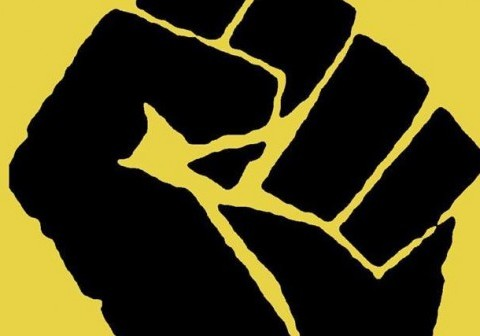

Бавната победа на протеста
Днес е 14 ноември 2013 г. и се навършват точно пет месеца от началото на протестите. Пет месеца е доста време.
Представете си, че на 17 юни, понеделник, Пламен Орешарски беше подал оставка. Сега вероятно щяхме да сме забравили за цялата ситуация и всеки щеше да си оре нивата и всичко щеше да е почти по старо му.
— Но това не стана и няма да стане, – казвате вие.
Някои хора са обезверени. Чувстват се отчаяни, мъчно им е, боли ги, облива ги ярост. Гневят се на МВР. Губят надежда. Други са принудени да наблегнат на работата и обичайните си грижи, като следят ситуацията само с половин око.
Но недоволството все още е резидентно във всички нас.
— И какво от това? – ще попитате вие.
Очевидно е, че няма пречка пред властимащите да продължат да игнорират това недоволство. Дори до следващите парламентарни избори. Мирният протест може толкова, ще кажете вие.
Не, ще кажа аз.
Всеки ден, в който този протест се проточва и в който правителството удължава агонията си, е пагубен за тях. Пагубен е за модела, по който е работило задкулисието досега.
Техните иначе брилянтно манипулативни умове не успяват да прозрят колко критично вреден за тях е този продължителен протест. Всеки ден е пирон в техния ковчег.
Дните им са преброени.
Времето им изтича. Краят за тях е неизбежен. Дори да не подадат оставка изобщо. Дори да откараме до следващите парламентарни избори – особено тогава! Но не е това, о не. Това е ясно като бял ден.
Това, което те не разбират е, че протакайки битката, ни правят все по-силни. Защо? Защото
продължителният протест ни променя трайно.
С всеки изминал ден на протест, властта всъщност работи за укрепване на гражданската ни съвест. Защото тези оздравителни промени на болното ни общество не могат да станат за ден, за два, за седмица. Няма начин. Но виж – за месеци, години? Това е друго. Това ще проработи.
Защото да правиш едно и също толкова дълго време, го превръща в траен навик.
Защото сме принудени ежедневно да мислим. Да анализираме ситуацията и проблемите около нас, да търсим информация, да задаваме въпроси, да преследваме отговорите. И ставаме все по-добри в това. И свикваме да го правим, за нас това става ежедневие.
Защото сме принудени всеки ден да рефлектираме над действията си. Да търсим нови механизми, способи, лостове. Да приемаме други гледни точки, да им отговаряме. Да разсъждаваме дали сме прави или не.
Защото сме принудени да опознаем лицата, които са параван на властта и които досега са живели блажено зад завесата на народното безразличие.
Защото видяхме, че не сме сами и че има и други като нас.
Защото много хора се събудиха. И защото с всеки ден на протести, вероятността да заспят отново намалява все повече.
И още, и още.
С всеки ден, като един личен треньор, кабинетът ни дава стимул да не спираме тренировката за гражданско общество. Скоро ще станем толкова силни, че която и власт да дойде, няма да може да си поеме дъх. Няма да бъде оставена на спокойствие и ще е на тръни непрекъснато.
Благодаря ви, господин премиер, благодаря ви, циркаджии в парламента!
Благодаря, че работите толкова активно за трайното пробуждане и укрепване на гражданското общество и за трайна промяна в морала тук! Моля ви, не подавайте оставка скоро, за да не вземе да секне този процес.
Всеки ден на протест ни прави по-силни. А вашето време изтича. Тик-так, тик-так...